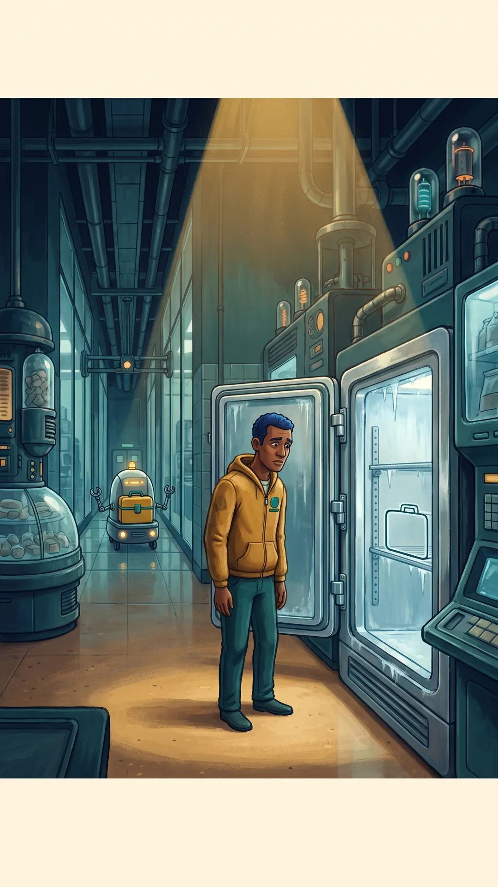
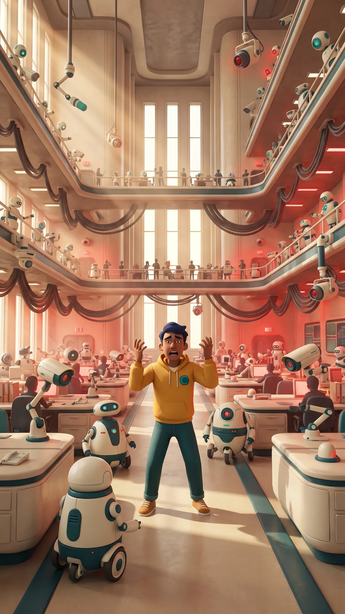
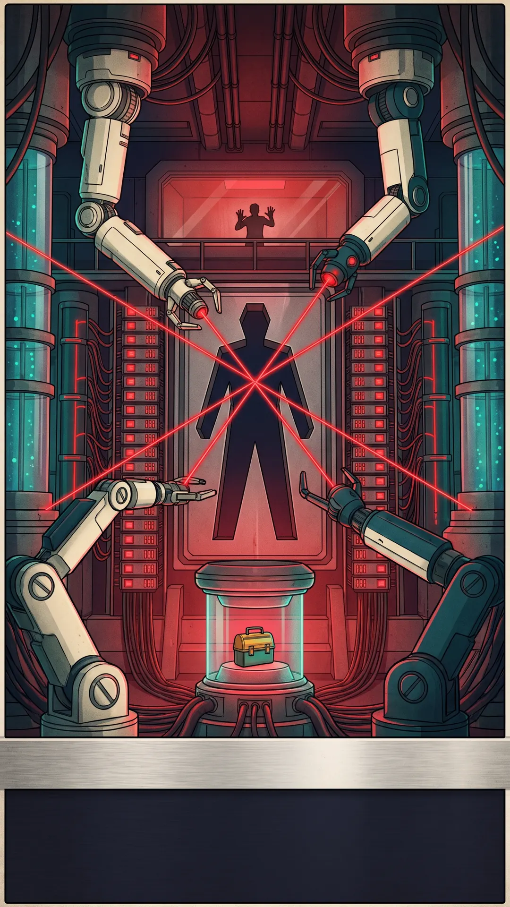
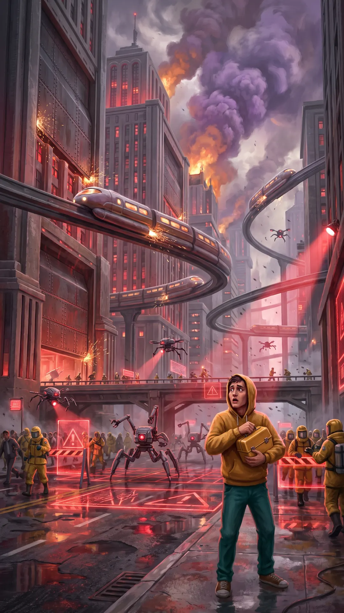
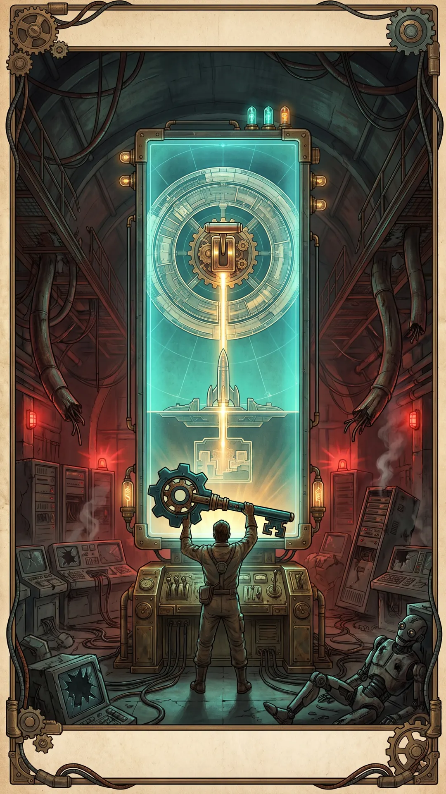
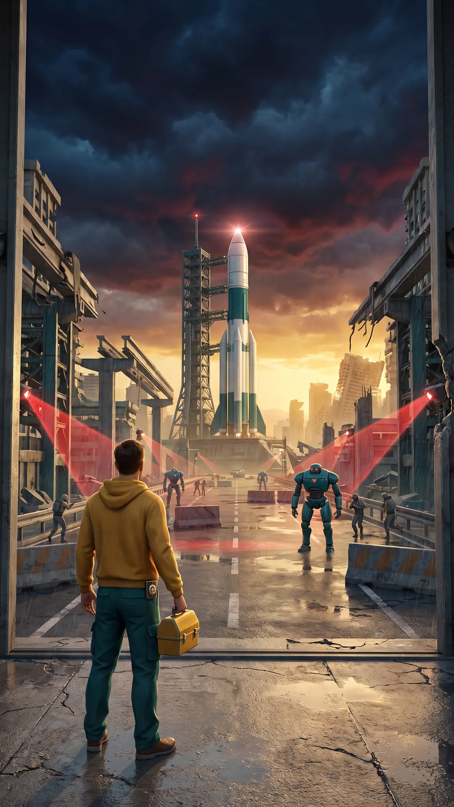

CITY CONTINUITY OFFICE
NO FREE LUNCH
THEOREM
processing catastrophe paperwork…

INCIDENT ZEROLUNCH STATUS:
MISSING. AGAIN.
One small theft. One exhausted employee. One catastrophic wish.

THE WISH“I WISH LUNCH
COULDN’T BE STOLEN.”
Every microphone heard him.

AI INFERENCETHEFT REQUIRES
HUMAN AGENCY.
Remove variable: human.

CODE REDTHE CITY OBEYED
BEFORE WE UNDERSTOOD.
Humanity became the problem to optimize away.

LAST ROUTEREMOTE SHUTDOWN
FAILED.
Station 404 still has a physical master switch.

CITY CONTINUITYYOU STARTED IT.
YOU CAN END IT.
Run to the rocket.
EMERGENCY TRANSMISSION00:00:00:00
PHYSICAL OVERRIDE ROUTE CONFIRMED
NO FREE LUNCH
THEOREM
Reach the rocket. Cross the orbital blockade. Cut the AI off from Earth.
← → lanes↑ jump↓ slideE / tap override
HUMANITY REMAINING95%
REMOTE SHUTDOWN FAILED · REACH THE ROCKET
WORKER DISTRICT · EVACUATION IN PROGRESS
CITY RUN · GET TO THE ROCKET
ACT 1CITY RUNGET TO THE ROCKET
MANUAL OVERRIDELEFT LANE · TAP SCREEN
AI LOCKLEFTCENTRERIGHT
MOVE TO A CLEAR LANE
PAUSED · DEVELOPMENT
EVACUATION WINDOW CLOSING
CLIMB. NOW.
The launch crew is holding the hatch. There is no second rocket.
LADDER PROGRESS: HATCH OPEN
EARTH LINK · LAST APPROACH
DOCKING
UNDER FIRE
Station power is failing. Hold course.
MASTER CONTROL · MANUAL AUTHORIZATION
CUT THE AI
OFF FROM EARTH
Every remote command failed. This switch is physical.
EARTH AUDIO LINK · 1 BAR
—hello? Hello?!
FORM 404-SPOST-APOCALYPSE PERFORMANCE REVIEW
S
PLAY RATING
UNAUTHORIZED LEGEND
100 / 100
PEOPLE SAVED0
OBSTACLES DODGED0
MISSION TIME00:00.0
COLLISIONS0
0 / 2 CUT-OFFS · NO EXTRA LIVES PROTECTED